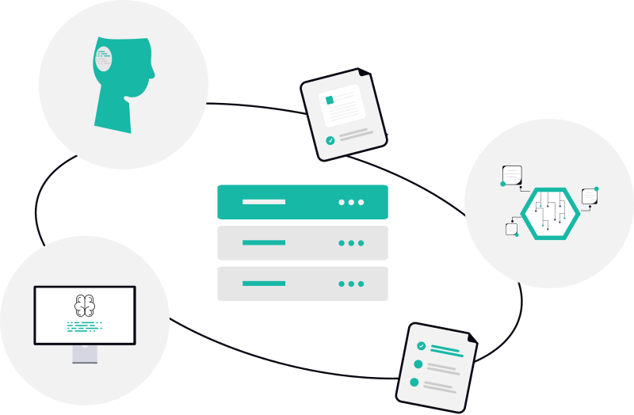
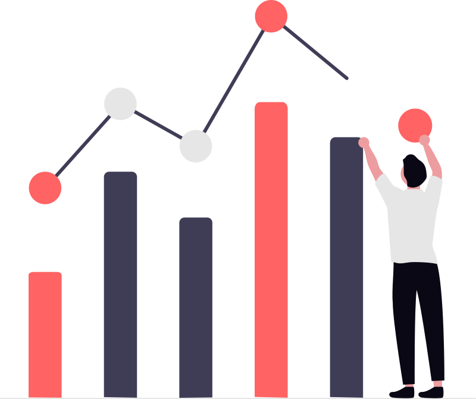
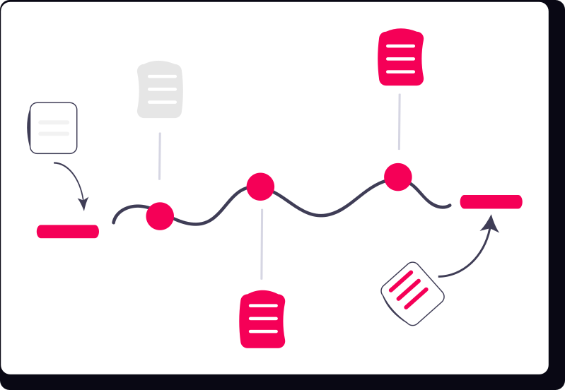

4
Research
Internships
6
Research
Projects
6
Skill
Certifications
4
Technical
Write-ups
Maitreya Sameer Ganu
Hello! I'm Maitreya, a Data Science enthusiast with an insatiable curiosity for uncovering stories hidden within data. Currently pursuing a BS-MS Dual Degree in Data Science at IISER Thiruvananthapuram, I tackle challenging real-world problems by applying rigorous statistical inference, algorithmic innovation, and mathematical foundations.
Research Domains
Core Competencies
Selected Projects



Application of Modularity Analysis

Design of Experiments (DOE)
Stock Price Prediction
Experience
Student Placement Coordinator
Proactively reaching out to startups and established companies to facilitate campus placement opportunities and career development for students, bridging the gap between industry and academia.
Member of Student Affairs Council
Representing student interests and coordinating with the administration to improve campus life, resolve grievances, and foster a vibrant student community.
Spokesperson & Decision Making Committee Member, Music Club
Serving as the primary spokesperson for the Music Club. Actively involved in the decision-making committee for organizing events, managing resources, and representing the club in official capacities.
Finance Coordinator, Club of Mathematics
Managed merchandise financing and provided key administrative support during the prestigious Frontier Symposium in Mathematics, 2023, ensuring smooth financial operations and successful event execution.
Internships & Research
Hierarchical Bayesian Poisson Mixture Models
Clustering models for scRNA-seq and scATAC-seq data (from Seurat) using Hierarchical Bayesian Poisson Mixture Models with rigorous statistical validation. Compared tthe he overall results using ARI metric and benchmarked the performance with many scikit-learn algorithms and even implemented MCMC techniques (Gibb's sampling). Biomarkers identification for each cell type along with statistical inference was implemented as well.
CertificateCryptography Internship
Completed an intensive reading project focusing on public key cryptography. Delved into advanced cryptographic techniques, security models, and their practical implications.
CertificateCommunity Detection & Network Analysis
Executed a winter research project on community and network detection using modularity optimization on diverse graph structures. Applied techniques to real-world datasets including neural, protein, and road networks.
CertificateDesign and Analysis of Experiments
Completed a reading project focused on the application of mathematical statistics in clinical randomized trials (CRTs) and in Longitudinal Experimental Studies; studied RCBD, Latin Square designs, and factorial experiments.
Education
BS-MS (Dual Degree), Data Science Major
Currently pursuing an integrated Master's program focusing on Data Science, building a strong foundation in statistical modeling, machine learning algorithms, and computational techniques.
FYBSc Statistics
Briefly attended, gaining initial exposure to university-level statistics before transitioning to the integrated BS-MS program at IISER.
High School Graduate (Science Stream)
Completed higher secondary education with a focus on Physics, Chemistry, Mathematics, and Electronics. Secured 92.5% (class XII) in the Maharashtra State Board Examination , 2nd rank in science stream in college and 5th overall in college.
Matriculation
Completed matriculation and scored 95% in class X CBSE Board Examinantion.
Certifications
Data Analysis with Python
Issued by Finlatics
Developed skills in Python-based data analysis, statistical modeling, and visualization, with a letter of recommendation from the instructor.
Intro to Machine Learning
Issued by Kaggle
Gained foundational knowledge of machine learning concepts and model building.
Time Series Data Analysis
Issued by Kaggle
Explored techniques for analyzing and forecasting time-dependent data.
Intro to Deep Learning
Issued by Kaggle
Acquired basic knowledge of neural networks and deep learning principles using TensorFlow.

AI Ethics
Issued by Kaggle
Explored crucial tools and frameworks for the ethical design and deployment of AI systems.
Technical Write-ups
Technical write-ups on topics that I believe I understand well enough to explain clearly from first principles. Feel free to download them and do check them out!
An Interesting Property of 6
Mathematics
Proved that 6 is the only number where the sum of its factors equals the product of its factors (excluding the number itself).
Operating Systems
Computer Science
Conceptual explanations of operating system fundamentals, focusing on internal mechanisms and system-level reasoning.
Computer Architecture & Datapath
Systems Design
A structured explanation bridging the gap between hardware design and instruction-level execution.
P vs NP
Theoretical CS
A detailed overview of the P vs NP problem, explained in simple terms, highlighting its real-world implications.